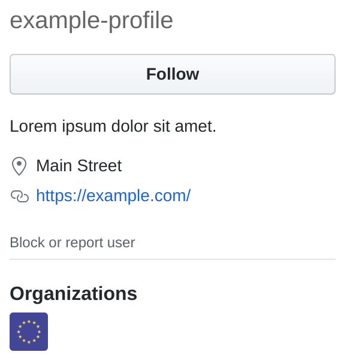

Would you like an EU Badge on your GitHub Profile?
The "badge" is nothing more than a label that you're a part of the eu team. To join the team:
list.txt and add your username to the bottom of this file.To enable the badge, do the following:
That's it! You'll now have the badge displayed on your GitHub Profile.
Any questions? Just open an issue.
This organization has no relation with the European Union. This is just done by some guy who happens to have the username. (>_<)